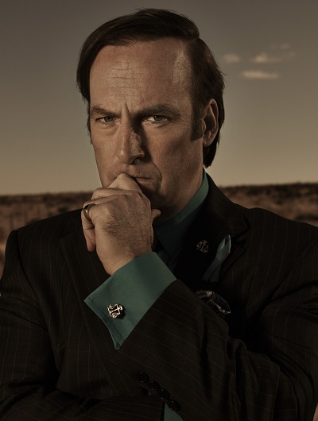

|
Walter White Уолтер Уайт – человек, чьи поступки сквозь призму времени превратили его... |
Jesse Pinkman Появление на пороге дома мистера Уйта, из-за которого Джесси... |
||
|
Skyler White Скайлер Уайт – жена Уолтера, ожидающая второго ребёнка... |
Hank Schrader Хэнк Шрейдер – муж сестры Скайлер Уайт – Мари, работающий в... |
||
|
Gustavo Fring Впервые Густаво Фринг появляется в конце второго сезона... |
Lydia Rodarte-Quayle Лидия – партнёр Густаво Фринга, работает в техасском... |
||
|  |
Saul Goodman Сол Гудман – комичный, изворотистый и нечистый на руку адвокат... |
Mike Ehrmantraut Майк Эрмантраут – бывший полицейский и правая рука Густаво... |
|
|
Marie Schrader Мари Шрейдер – супруга агента Хэнка Шрейдера и младшая сестра Скайлер... |
Walt White Jr. Уолтер младший (называющий себя Флинн) – сын Уолтера и Скайлер... |
Альбукерке, Нью-Мексико. Семья Уайтов ведёт скромную американскую жизнь. Он – учитель химии, подрабатывающий вечерами на автомойке, она – бухгалтер в декрете, их сын – подросток с ДЦП. Празднуя 50-ти летие Уолтер Уайт узнаёт, что болен раком. Счета, второй ребёнок, который, возможно, не увидит отца…
Отчаяние бросить семью без гроша, переполняет его. Будучи на облаве нарколаборатории вместе со свояком Хэнком, Уолтер решает, что изготовление метамфетамина – единственный быстрый способ заработать. Пусть и незаконный. В этом мистеру Уайту поможет его бывший ученик, знающий «бизнес» - Джесси Пинкман…
Познакомившись с опальным местным дилером – Туко Саламанкой, Уолтер и Джесси продолжают изготовлять метамфетамин и сбывать его Туко. Подальше от близких, полиции и любопытных глаз, на старом трейлере они уезжают в глушь штата, где готовят партию за партией, повторяя себе каждый раз, что эта будет последней...
Но лечение рака Уолтера, семейные проблемы Джесси, а также непредвиденные расходы, забирают весь заработок. Пытаясь расширить бизнес, главные герои окутываются в омут проблем, связанных с реализацией их продукта. Скрывать род деятельности от жены и особенно свояка Хэнка Шрейдера, работающего в УБН, Уолтеру становится всё труднее.
Уолтер заключает крупный контракт с наркобароном Густаво Фрингом. Построив подземную лабораторию, Гус приставляет к нему нового напарника – Гейла. Джесси проходит лечение от зависимости в реабилитационном центре. Вернувшись, он осознаёт, что больше не нужен Уолтеру.
После признания жене Скайлер, обстановка в семье Уайтов накаляется до предела. Уолтер с головой уходит в работу. Джесси самостоятельно занимается изготовлением и продажей метамфетамина, чем приводит в бешенство Уолта. Разбираясь друг с другом, герои не замечают главную угрозу: скоро Гейл сможет сам управлять лабораторией и участь Уолтера больше не понадобится.
После гибели Гейла, мистеру Фрингу не остаётся ничего другого, как продолжить работать с Уолтером и теперь Джесси. Убирая конкурентов, Густаво становится монополистом рынка, параллельно увеличивая к себе внимание Хэнка Шрейдера.
Уолтер становится невольным соучастником расследования Хэнка. Джесси, чувствуя неминуемую расправу со стороны Гуса и дыхание Шрейдера за спиной, начинает терять самообладание. Единственным выходом, чтобы отвести от себя следы, Уолтер видит в убийстве Густаво и уничтожении подземной лаборатории.
Наркоимперия Густаво Фринга обезглавлена. Джесси, затаив злобу на Уолтера после отравления близкого ему ребёнка, соглашается продолжить изготовление метамфетамина. Третим подключается бывший начальник безопасноти Фринга Майк. Но планы Уолтера куда амбициозней – после смерти Густаво, он хочет стать наркобароном.
Заработав внушительную сумму, Уолтер решает уйти на покой и больше времени уделить семье, пока рак дал ремиссию. Расследование Хэнка приводит его к ужасному откровению. Главным подозреваемым, так называемым Хайзенбергом, за которым он гнался почти два года, является его свояк… Для сбора доказательств и дачи показаний против Уолтера, Хэнк переманивает на свою сторону Джесси Пинкмана.
-
Bryan Cranston
Брайан Ли Крэнстон - родился в 1956 году в Калифорнии. До своей культовой роли Уолтера Уайта снимался во множестве картин с 1980 года, среди которых можно отметить комедийный сериал «Малкольм в центре внимания».
После «Во всех тяжких» стало очевидно, что на роли героев, замешанных в криминале, Брайан подходит идеально. Как следствие, он получил главную роль в криминальной драме «Афёра под прикрытием». Крэнстон сыграл в нём агента ФБР Боба Мазура, внедрившегося в окружение самого одиозного преступника за всю историю – Пабло Эскобара.
Несомненно, Брайан Крэнстон очень талантливый актёр и за свою работу становился обладателем премий Эмми и Золотой глобус. Он продолжает активно сниматься в разннобразных проектах. Среди новинок киноиндустрии на его счету роли в фантастическом боевике «Годзилла», биографической драме «Трамбо», комедии «Почему он?» и многих других.
-
Aaron Paul

Аарон Пол – родился в семье священника в штате Айдахо. Там же закончил экстерном среднюю школу, после чего начал актёрскую деятельность. В начале карьеры парень снимался в музыкальных клипах и рекламах, среди которых Coca-Cola.
В 2001 году Аарон принял участие в одном из эпизодов «Секретных материалов». Интересно, что в этом же культовом сериале, несколькими сезонами раннее снялся и Брайан Крэнстон. Далее последовал сериал «Большая любовь» и, наконец, «Во все тяжкие».
За роль Джесси Пинкмана, актёр трижды стал обладателем Эмми. Аарон как нельзя лучше подошёл к работе в сериале и справился на все 100%. После Breaking Bad, Пол сыграл главную роль в экшене «Жажда скорости», а также принял участие в фантастике «Исход: «Цари и Боги», драме «Девятая жизнь Луи Дракса», комедийном боевике «Полтора шпиона» и многих других весьма разннобразных картинах.
-
Anna Gunn
Анна Ганн - американская актриса кино и театра. Родилась в Санта-Фе, штат Нью-Мексико в 1968 году. Актёрскую деятельность начала в театре, а в 1992 году сыграла в ситкоме Down the Shore. Затем следовало множество гостевых визитов на телевидение и эпизодических ролей.
Скромная карьера Анны Ганн начала набирать обороты В 2005 году она получила сыграла миссис Марту Буллок в телесериале «Дэдвуд». А затем последовала культовая роль Скайлер Уайт, за которую она дважды номинировалась на Эмми и таки получила в 2014 году уже по завершению «Во все тяжкие».
После ВВ, Анна Ганн впервые сыграла главную роль в фильме «Секреты Эдема». 2016 год ознаменовался для неё участием в таких картинами, как «Чувство справедливости», где её актриса очень схожа со Скайлер Уайт, и «Чудо на Гудзоне» с Томом Хэнксом. Несмоненно, что Анна очень талантливая актриса и ещё не раз порадует своих полконников.
-
Dean Norris
Дин Джозеф Норрис – американский актёр из Индианы 1963 года рождения, сыгравший агента ОБН Хэнка Шрейдера. Дин рос в многодетной семье вместе с 4-мя сёстрами. В детстве у мальчика случилась серьёзная травма ноги, так что его хромота в сериале Во все тяжкие настоящая.
Актёрскую деятельность Дин начал с 18 лет, во время посещений Королевской академии драматического искусства. За свою карьеру он снялся во множестве картин. Среди которых были прявления в «Красавица и чудовище» 1990-го года, бестселлере «Терминатор 2» с железным Арни, триллере «Фирма», детективном сериале «CSI: Место преступления» и другие. Не обойти стороной конечно появление Норриса в «Секретных материалах», где также снимались Брайан Крэнстсон и Аарон Пол.
За роль Хэнка Шрейдера Дин неоднократно номинировался на премии лучшего актёра второго плана. В 2014 году он стал обладателем Премия Гильдии киноактёров США. После BB, где раскрылись множество актёров, включая Норриса, последовала роль Джеймса Ренни в сериале «Под куполом». Надеемся, далее карьера Дина будет только расти.
Криминальная драма «Во все тяжкие», несомненно, раскрыла заново или дал толчок практически всем актёрам, которые играли в сериале. Режиссёр проекта Винс Гиллиган, тщательно подбирал состав. Если капнуть глубже, то можно найти множество отсылок к легендарным «Секретным материалам», где Винс также был сопродюсером.
Ещё во время съёмок BB, между первым и вторым сезонами, было выпущено 5 мини-эпизодов про жизнь героев из Альбукерке, названных «Breaking Bad: Original Minisodes». В нём приняли участие Брайан Крэнстон, Аарон Пол, Дин Норрис, Бетси Брандт, а также Мэтт Джонс. Минисериал не несёт какого либо сюжетного откровения относительно «старшего брата». Вероятно, вся задумка этого проекта заключалась в том, чтобы повеселить фанатов оригинального сериала…
По завершению показа «Во всех тяжких» в 2013 году, множество актёров сыграли в известных картинах, но мало что из них можно причислить ко вселенной сериала. Аарон Пол получил главную роль в боевике «Need for Speed: Жажда скорости», Анна Ганн сыграла в драме «Чувство справедливости», Брайан Крэнстон - в криминальной драме о разоблачении нарко картеля Пабло Эскобара.
Казалось бы, что легенда окончена, но в 2015 году Винс Гиллиган порадовал всех поклонников сериала о работе над приквелом к Breaking Bad, события которого развиваются вокруг адвоката Джеймса МакГилла. Именно так в первом паспорте указанны имя и фамилия Сола Гудмана, а сам приквел назван одноименным слоганом из ВВ «Лучше звоните Солу».
Кроме Боба Оденкёрка, на данный в проекте также принимают участие «старые знакомые»: Джонатан Бэнкс (Майк Эрмантраут), Реймонд Круз (Туко Саламанка), Марк Марголис (Гектор Саламанка) и другие. Неизвестно, кто ещё «вернётся» по мере выпуска новых серий. Возможно появление Гектора Саламанки, с которым Сол уже достаточно долго знаком в Breaking Bad. К сожалению, участие Аарона Пола после длительных раздумий было исключено.
Сериал повествует об испытаниях начинающего адвоката Джеймса МакГилла. В свою бурную молодость он вёл разгульный образ жизни, промышляя жульничеством и другими хитростями ради наживы. Не растеряв навыков, Джеймс пытаюется выйти из тени старшего брата – акулы юриспруденции, и открыть собственную адвокатскую контору в Альбукерке…